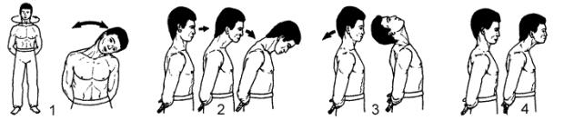

<- back
Next up: Журавль перед разбегом
Голова гуся

Исходное положение: Стоим, ноги на ширине плеч, руки сложены за спиной, голова прямо.
- Описываем круговые движения головой влево, затем – вправо. Дыхание произвольное.
- На выдохе наклоняем голову вправо, на вдохе возвращаем обратно. Затем повторяем цикл влево. Делаем по 4 раза в каждую сторону.
- На выдохе делаем резкий наклон головой вперед. На вдохе возвращаемся в исходное положение. Повторяем 4 раза. Затем, соблюдая тот же принцип, проделываем движение назад. В обоих случаях зубы стиснуты, на выдохе растягиваем углы рта и издаем резкий шипящий звук.
- На выдохе подаем голову вперед, не наклоняя, выдвигая вперед подбородок. Сквозь стиснутые зубы издаем долгий шипящий звук. Делаем по 4 раза.
Next up: Журавль перед разбегом